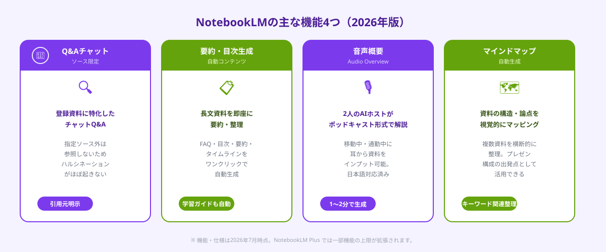
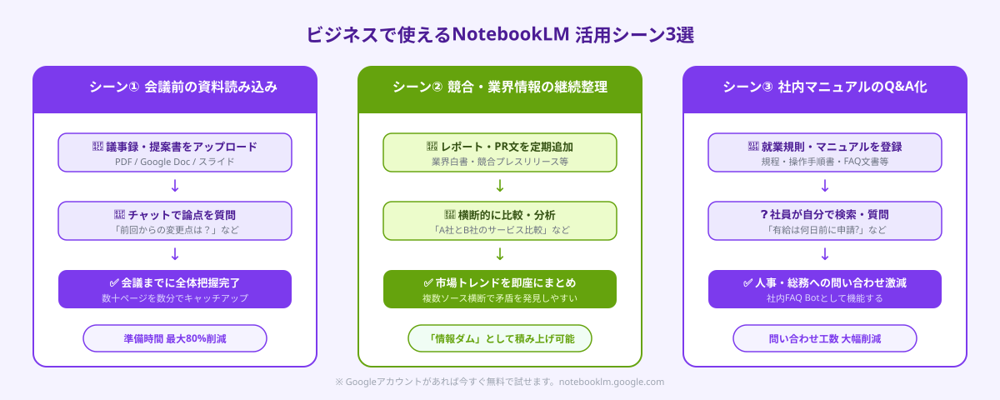

NotebookLMとは｜他のAIと何が違うのか
NotebookLM（ノートブックエルエム）は、Googleが提供する無料のAI調査・ノートツールです。最大の特徴は「グラウンディング（接地）」と呼ばれる仕組みで、ユーザーが事前に登録したソース文書だけを参照して回答を生成します。
ChatGPTやClaudeは学習データ全体（インターネット上の膨大な情報）から回答を生成するため、「もっともらしいが誤った情報（ハルシネーション）」が生じることがあります。NotebookLMでは指定ソース外の情報を使わないため、回答の根拠となるソース引用が明示され、情報の信頼性を確認しやすいという大きなメリットがあります。
2026年7月時点のNotebookLMは個人・ビジネス利用ともに無料（NotebookLM Plus は有料）で利用でき、1つのノートブックにソースを最大50件、各ソースは最大500,000字まで登録可能です。Googleアカウントがあれば即日利用できます。
NotebookLM：指定ソースのみ参照 → ハルシネーション少・引用明示。長文資料のQ&A・要約・音声化が得意。
ChatGPT：学習データ全体を参照 → 汎用性高・創作・コーディングが得意。ハルシネーションリスクあり。
Claude：学習データ全体を参照 → 長文理解・文章生成・分析が得意。ハルシネーションリスクあり。
使い分けのポイント：「特定の資料・文書を深く分析したい」ならNotebookLM。「汎用的な質問・文章生成」ならChatGPT / Claude。
NotebookLMの主な機能4つ

① Q&Aチャット（ソース限定）
登録したソース文書に対してチャット形式で質問できます。「この契約書で解約条件はどこに書かれているか」「このレポートの主要な結論を3点まとめて」など、具体的な質問に対してソース内の該当箇所を引用しながら回答します。引用元は回答の下に番号付きで表示されるので、原文を確認するのが簡単です。
② 要約・目次・FAQ自動生成
ノートブックを作成すると、登録したソースから自動的に「よくある質問（FAQ）」「目次」「要約」「タイムライン（年表）」「学習ガイド」などのコンテンツが生成されます。長い報告書や仕様書を素早く把握したいときに特に役立ちます。
③ 音声概要（Audio Overview）
2024年後半から提供が始まった機能で、登録したソースの内容をもとに2人のAIホストが対話形式で解説するポッドキャスト音声を自動生成します。通勤中・移動中に耳から情報をインプットできる点が好評で、2026年現在は日本語での生成品質も大幅に向上しています。
④ マインドマップ自動生成
登録したソースの構造・論点・キーワードの関連をマインドマップ形式で視覚化します。複数の資料を横断的に整理したいときや、プレゼン構成を考えるときの出発点として使えます。
NotebookLMの始め方（アカウント設定・ノートブック作成）
NotebookLMはGoogleアカウントがあれば追加設定なしで使い始められます。手順は以下の通りです。
STEP 1：アクセス
ブラウザで notebooklm.google.com にアクセスし、Googleアカウントでログインします。法人利用の場合はGoogle Workspace アカウントでもログイン可能です。
STEP 2：新しいノートブックを作成
ホーム画面の「新しいノートブック」ボタンをクリックします。ノートブックはプロジェクト単位で管理するイメージで、「〇〇プロジェクト資料集」「競合調査2026Q3」など目的別に複数作成できます。
STEP 3：ソースを追加
ノートブックにソースを追加します。対応フォーマットはPDF・Google ドキュメント・Google スライド・テキストファイル・Webページ（URL）・YouTube動画（URL）・コピー＆ペーストテキストです。最大50件まで登録でき、複数ファイルを一度にアップロードできます。
STEP 4：チャットで質問・機能を使う
ソース登録が完了すると、右側のチャット欄で質問できるようになります。また「概要パネル」から自動生成されたFAQ・要約・目次・マインドマップにアクセスできます。
①登録したソース外の情報は回答に含まれない：「これ以外の業界事例を教えて」という質問には答えられません。追加の背景情報が必要なら、別のソースとして登録してください。
②機密情報の取り扱いに注意：Google Workspace エディション（ビジネス契約）以外の個人アカウントでは、登録データがGoogleのAI学習に使用される場合があります。社外秘・個人情報を含む資料は利用規約を必ず確認してください。
③ソースの品質が回答品質を決める：スキャンした紙資料の画像PDFはテキスト抽出精度が下がります。テキストレイヤーのあるPDFか、Wordファイルをそのまま登録するのが最善です。
ビジネスで使える活用シーン3選

活用シーン①：会議前の資料読み込み・論点整理
重役会議・取締役会・プロジェクト定例など、事前に大量の資料を読み込む必要がある場面でNotebookLMは特に威力を発揮します。議事録・レポート・提案書をNotebookLMにアップロードし、「前回会議からの変更点は何か」「今回の主要論点を3つ挙げて」「Aさんの発言で気になる点は」などと質問することで、数十ページの資料を短時間で把握できます。
活用シーン②：業界レポート・競合情報の継続的な整理
業界白書・競合他社のプレスリリース・市場調査レポートを定期的にNotebookLMに追加していく「情報ダム」として活用できます。「〇〇社と△△社のサービス比較」「2026年上半期の市場トレンドまとめ」などの質問に対して、登録した複数ソースを横断的に参照して回答してくれます。
活用シーン③：社内マニュアル・規程文書のQ&A化
就業規則・経費精算ルール・システム操作マニュアルなどを登録しておくと、「有給取得は何日前に申請するか」「経費申請の上限は部署ごとに違うか」といった問い合わせにNotebookLMが即答できる「社内FAQ bot」として機能します。人事・総務・情シスへの問い合わせを自分で解決できるため、問い合わせ工数の削減につながります。
音声概要（Audio Overview）の使い方
Audio Overviewは、NotebookLM最大の差別化機能です。登録したソースをもとに2人のAIホストが掛け合い形式でポッドキャスト風に解説する音声を自動生成します。2026年現在、日本語での生成精度は高く、10〜15分程度の音声が約1〜2分で生成されます。
生成手順
①ノートブック上部の「概要パネル」を開く → ②「Audio Overview を生成」ボタンをクリック → ③数分待つと音声ファイルが生成される → ④ブラウザ内で再生、またはダウンロードして持ち出し可能。
カスタマイズのポイント
生成前に「カスタマイズ」ボタンから、ホストに対して「初心者向けに平易な言葉で解説してください」「専門家向けに技術的な詳細を重視してください」などの指示を与えることができます。報告書を移動中にインプットしたい・チームメンバーに音声で共有したいというシーンで活用されています。
Audio Overviewの限界
あくまでソースに基づいた解説であり、ホストの発言内容を細かくコントロールすることはできません。また数値・固有名詞の読み上げに誤りが出ることがあるため、重要な数値は音声後に原文で確認する運用が安全です。
ANKENでは、AIツールの社内展開支援・業務自動化システムのスポット開発を得意とするエンジニアをご紹介しています。「NotebookLMを使った社内Q&Aシステムを構築したい」「AIリテラシー研修と合わせてツール導入したい」という企業様のご相談も承っています。
👉 無料で相談する（AIツール活用支援をスポット外注で依頼する）「どのAIツールが自社に合うか」「NotebookLMと他ツールの組み合わせ方」など気軽にご相談ください。
よくある質問
- Q. NotebookLMは無料で使えますか？
- A. 基本機能は無料です。月額料金が必要なNotebookLM Plusでは生成上限の引き上げ・チーム共有・優先サポートなどの追加機能が使えます。
- Q. 社外秘の資料をNotebookLMに登録しても大丈夫ですか？
- A. Google Workspace契約企業は管理者設定でデータ学習をオフにできます。個人アカウントは利用規約を確認の上、機密資料は登録しないことを推奨します。
- Q. 音声概要（Audio Overview）は日本語で生成できますか？
- A. できます。日本語ソースを登録すると日本語で音声が生成されます。2026年現在、日本語の読み上げ品質は実用レベルまで向上しています。
まとめ
NotebookLMは「指定ソースのみを参照する」という設計思想により、ハルシネーションリスクを大幅に抑えながら資料の深い理解を助けてくれるAIツールです。会議前の資料読み込み・競合情報の整理・社内マニュアルのQ&A化など、情報の量が多くて時間がかかる業務に特に効果的です。
使い始めのポイントを3つまとめます。①まずは手元の長いPDF1〜2件を登録して「要約」と「FAQ自動生成」を試す、②Audio Overviewで音声インプットの快適さを体験する、③社内資料をまとめたノートブックを1つ作りチームで共有する。無料で今すぐ始められるので、まず1つノートブックを作ることから実践してみてください。